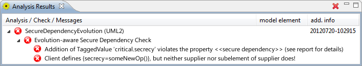

This check analyzes the evolution of UML static structure diagrams in regard to the «secure dependency» property. To analyze the evolution of a model, the original model has to be secure in regard to the corresponding non-evolutionary check. To make sure that is the case please use the Static Secure Dependency Check.
The table below explains the UMLchange syntax for new model elements of class diagrams. The metaclasses whose key-value pairs are simple are omitted.
| Model Element | Metaclass (if different) |
Key | Appropriate Values |
|---|---|---|---|
| Attribute | name | String value | |
| type | String value | ||
| Operation | name | String value | |
| type | String value | ||
| Parameter | name | String value | |
| type | String value | ||
| Association | name | String value | |
| source | qualified name of model element | ||
| sourceEndName | String value | ||
| sourceEndKind | String (Aggregation Kind) | ||
| sourceLowerBound | Multiplicity value | ||
| sourceUpperBound | Multiplicity value | ||
| sourceNavigable | true or false | ||
| target | qualified name of model element | ||
| targetEndName | String value | ||
| targetEndKind | String (Aggregation Kind) | ||
| targetLowerBound | Multiplicity value | ||
| targetUpperBound | Multiplicity value | ||
| targetNavigable | true or false |
Annotate the secure model with the desired evolutionary changes by using the UMLchange profile extensions. After finishing the model, create a new CARiSMA analysis on the model. Add the Evolution-aware Secure Dependency Check to the used checks and click "Run" to start the analysis.
The Analysis Results View displays whether the check was successful. If any evolutionary step results in a violation of the «secure dependency» property, the resulting violation is displayed in the Analysis Results View.
The example model describes an evolution that adds a critical method without updating the dependent classes and interfaces.
After adding the necessary evolutionary steps to the model, the analysis reports the success of the check.